Deities


The celebration is happening now • 23–29 September 2026
Designed & Developed by Utsav Khadgi (Tyson)
© 2026 All Rights Reserved

Indra Jatra was started by King Gunakamadeva- (गुणकामदेव) to commemorate the founding of the Kathmandu city in the 10th century. Kumari Jatra began in the mid-18th century. The celebrations are held according to the lunar calendar, so the dates are changeable.
Indra Jatra is one of the most vibrant and celebrated festivals of Kathmandu Valley, bringing together history, culture, tradition, music, and devotion.
Celebrated mainly in Kathmandu, the festival is famous for its magnificent processions, traditional dances, masked performers, the Kumari the Living Goddess and the rich traditions of the Newar community.
More than just a festival, Indra Jatra represents the identity, history, and spirit of Kathmandu, bringing generations together to celebrate traditions that have been preserved for centuries.
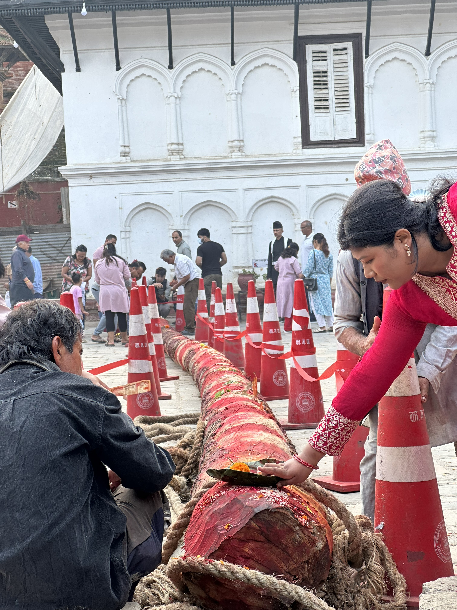
The festival starts with the inauguration Yosin Thanegu (योसिं थनेगु), the hoisting of Yosin, a pole from which the banner of Indra is unfurled, at Kathmandu Durbar Square. The pole, a tree shorn of its branches and stripped of its bark, is obtained from a forest near Nālā, a small town 29 km to the east of Kathmandu. It is dragged in stages to Durbar Square by men pulling on ropes.
Yosin Thanegu also knowns as Linga is the most awaited event of Indra Jatra as each year thousands of people come to watch the and even participate in the hoisting of this huge tree trunk which is hoisted at strictly scheduled based on an auspicious and calculated date according to the Lunar calendar.

Another event on the first day is Upāku Wanegu (उपाकु वनेगु) when participants visit shrines holding lighted incense to honor deceased family members. They also place small butter lamps on the way. Some sing hymns as they make the tour. The circuitous route winds along the periphery of the historic part of the city. The procession starts at around 4 to 6 pm.
•Route: Maru, Pyaphal, Yatkha, Nyata, Tengal, Nhyokha, Nhaikan Tol, Asan, Kel Tol, Indra Chowk, Makhan, Hanuman Dhoka, Maru, Chikanmugal, Jaisidewal, Lagan, Hyumata, Bhimsensthan, Maru.
•Day: On the day of Kwaneyā.


The Kumari is chosen through one of the most rigorous selection processes in world religion. A young girl from the Shakya clan of the Newar Buddhist community is selected by senior priests and royal astrologers, who evaluate her against a set of thirty-two specific physical attributes believed to mark a fit vessel for the goddess. Candidates must also demonstrate fearlessness during secretive nighttime rituals before being confirmed as the new Living Goddess.
Once installed, the Kumari resides in the Kumari Ghar, a palace at the edge of Kathmandu Durbar Square, where she is worshipped daily and makes only limited public appearances. Her divinity is considered temporary — believed to depart the moment she experiences her first serious illness, injury involving blood loss, or the onset of puberty, at which point a new Kumari is chosen to continue the unbroken tradition.
On the main day of Indra Jatra, the Kumari emerges from her secluded residence adorned in red and gold, with a painted third eye on her forehead, and is escorted to a towering wooden chariot far larger than those of Ganesh and Bhairav. From this elevated seat she is pulled through the old city's narrow lanes, and from this lofty perch she is believed to bestow blessings upon everyone who catches sight of her, with devotees holding that even a brief glimpse of the Kumari can bring good fortune.
The Kumari's chariot procession also carries deep political weight. Historically, the reigning head of state visits her chariot to receive a ceremonial tika and blessing, symbolizing the transfer of divine sanction to govern — a practice that continues in modern Nepal with the President observing the same rites each year. In this way, Kumari Jatra binds the spiritual, cultural, and civic life of Kathmandu into a single living tradition.
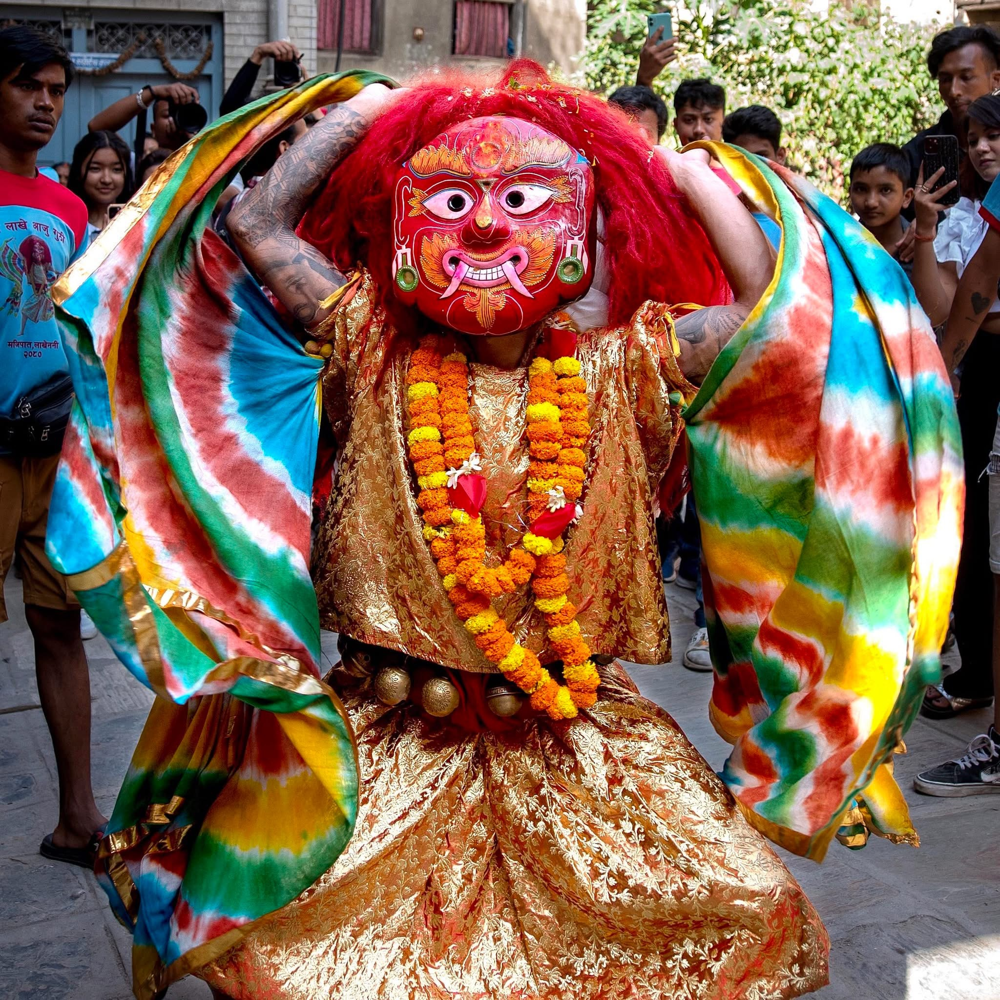
Shree Majipa Lakhey is one of the most famous and exciting figures associated with the tradition Indra Jatra. Known for his powerful masked appearance and energetic dance, Lakhey moves through the streets of Kathmandu, creating an unforgettable atmosphere during the festival.
Lakhey Aaju may appear frightening because of his appearance and strong aura but he is traditionally regarded as a protector of our newari community.
The Majipa Lakhey dance is an important part of Kathmandu's cultural heritage and represents the energy, mystery, and spirit of Indra Jatra. For many people, the appearance of Lakhey is one of the most anticipated moments of the festival.
Halchowk Bhairav is a powerful and significant deity associated with the rich religious traditions of the Kathmandu Valley. Bhairav is regarded as a fierce manifestation of Lord Shiva and is traditionally connected with protection, strength, and the destruction of evil.
During important festivals and cultural celebrations, the traditions surrounding Bhairav reflect the deep spiritual heritage of the Newar community.
The powerful imagery, rituals, and cultural performances connected with Bhairav demonstrate the diversity and depth of Nepal's living traditions. Halchowk Bhairav remains an important symbol of faith, history, and cultural identity in Kathmandu.
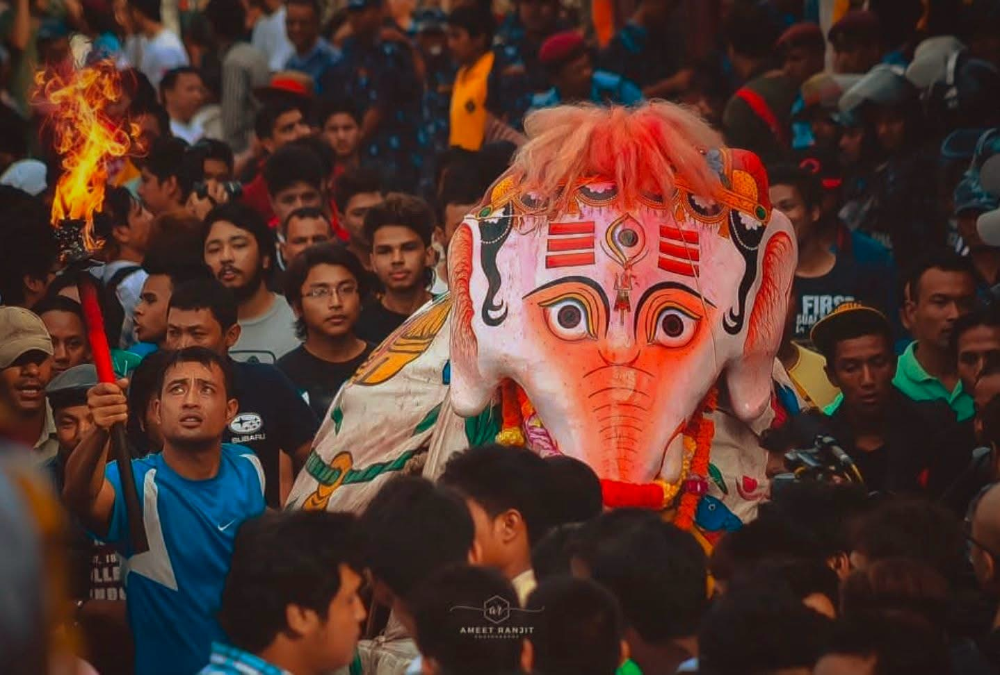
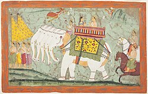
After Lord Indra was captured by the farmers for plucking flowers as they did not known he was Lord Indra himself, his Vahan Pulu Kisi (alternate name Tānā Kisi), worried about his master runs around the town searching frantically for its master. A strong elephant full of enegery representation of an elephant, also runs around town reenacting Indra's elephant searching frantically for its master.
Pulkisi is another beloved and recognizable figure of Indra Jatra. Represented as a large white elephant, Pulkisi travels through the streets of Kathmandu accompanied by music, celebration, and enthusiastic crowds.
According to tradition, Pulkisi is associated with the elephant of Lord Indra and forms an important part of the stories and traditions surrounding the festival. Its playful movements and distinctive appearance bring joy and excitement to the celebrations, making Pulkisi especially popular among children and spectators.
Pulkisi also known as Airavat who possessed the power of 10000 Celestial Elephant and even one Celestial Elephant possessed the power of 10000 regular elephant hence the reason for such a powerful representation of this Celestial being is protrayed with brute strength and limitless enegery.


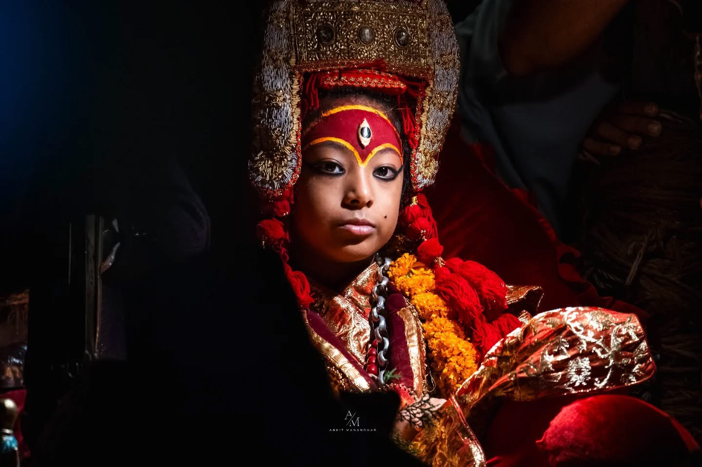


Indra Jatra is celebrated in honor of Lord Indra, the Hindu king of the heavens. Indra is renowned for his role in ensuring the welfare and prosperity of humanity by regulating rainfall and fostering abundant harvests. Indra Jatra is always celebrated at the time of the retreat of the summer monsoon, and the time when rice paddies are blooming and heavy rainfall could damage the crops.
According to legend, Indra (Hindu god-king of heaven), disguised as a farmer, descended to earth in search of parijat swã (Night jasmine), a white flower his mother Basundhara needed to perform a ritual.
As he was plucking the flowers at Maruhiti, a sunken water spout at Maru, the people caught and bound him like a common thief. He was then put on display in the town square of Maru in Kathmandu. (In a reenactment of this event, an image of Indra with his hands bound is put on display at Maru and other places during the festival.)
The God of Rain,Thunderstorm and river flowsLord Indra (Sanskrit: इन्द्र) is the Vedic god of weather, considered the king of the devas and the realm of Svarga in Hinduism. He is associated with the sky, lightning, weather, thunder, storms, rains, river flows, and war
After Lord Indra was captured and held captivated by the farmers. His mother, worried about his extended absence, came to Kathmandu and wandered around looking for him. This event is commemorated by the procession of Dagin (दागिं) through the city.
When the city folk realized they had captured Indra himself, they were appalled and immediately released him. Out of appreciation for his release, his mother promised to provide enough dew throughout the winter to ensure a rich crop. It is said that Kathmandu starts to experience foggy mornings from this festival onwards because of this boon
The procession of the goddess Dāgin (दागिं) (alternative name: Dāgim) re-enacts Indra mother's going around town in search of her son. The procession consists of a man wearing a mask accompanied by a musical band. It starts at after the chariot of Kumari returns to Basantapur after journeying around the southern part of town. Dagin is followed by many people who have lost a family member that year.
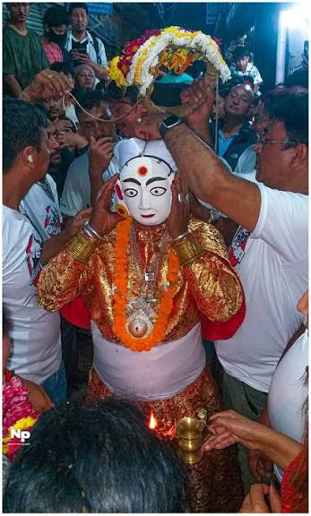
The procession begins from an alley at the south-western corner of Maru square and passes by the western side of Kasthamandap. The participants follow the festival route north to Asan and then back to Durbar Square. The procession continues to the southern end of town before returning to Mar
• Route: Maru, Pyaphal, Yatkha, Nyata, Tengal, Nhyokha, Nhaikan Tol, Asan, Kel Tol, Indra Chowk, Makhan, Hanuman Dhoka, Maru, Chikanmugal, Jaisidewal, Lagan, Hyumata, Bhimsensthan, Maru
• Day: On the day of Kwaneyā
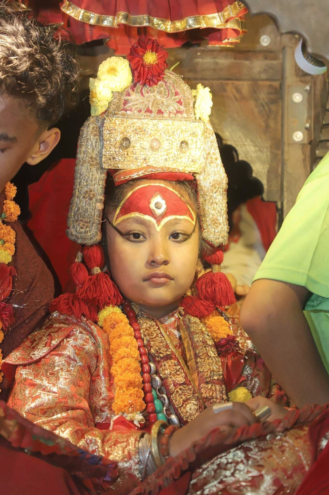
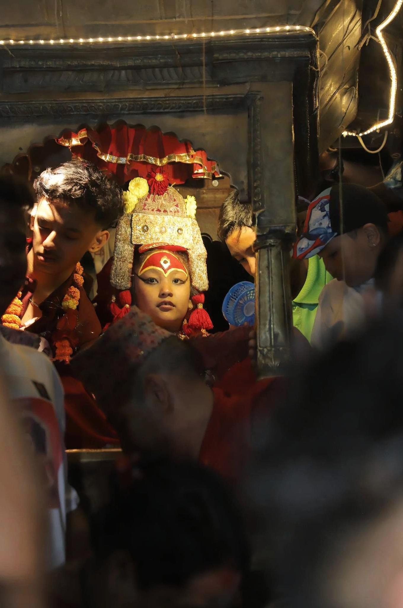
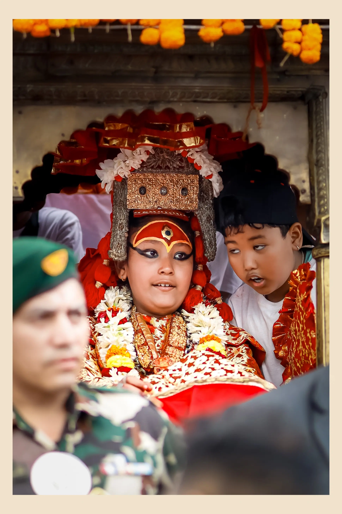
Among the three chariots that define Kathmandu's Indra Jatra, the smallest — but by no means least significant — carries Shree Ganesh, the elephant-headed deity revered across Nepal as the remover of obstacles. While the towering chariot of the living goddess Kumari draws the most attention as the festival's centerpiece, the Kumari's chariot is followed by two smaller chariots carrying representatives of Ganesh and Bhairav, forming a trio that together embodies the ritual heart of the festival. A young boy is chosen to represent the deity, seated in the chariot and paraded through the old city as a living embodiment of Ganesh rather than merely a carved idol
The procession itself unfolds over three separate days, each with its own name and route, and Ganesh's chariot travels alongside Kumari and Bhairav on all of them. Three chariots carrying human representations of the deities Ganesh, Bhairava and Kumari, accompanied by musical bands, are pulled along the festival route through Kathmandu on three days, with the procession starting around 3 pm each time. On the first day, called Kwaneyā, the chariots move through the southern part of town. The second day, the full moon day known as Yenya Punhi, sees the Thaneyā procession pulled through the northern part of the city as far as Asan, and on the third day, Nānichāyā, the chariots pass through the central section at Kilāgal
Ganesh's presence in the procession is not incidental — as the deity typically invoked first before any undertaking in Hindu tradition, his chariot leading or accompanying Kumari's symbolically clears the way and ensures the festival proceeds without hindrance. This reflects a broader pattern in Newar religious life, where Ganesh shrines are found at the entrances of neighborhoods (bahals) and are the first stop for anyone beginning a journey or a ritual. During Indra Jatra, his inclusion alongside the fierce Bhairav and the divine Kumari rounds out a symbolic triad: obstacle-removal, protective ferocity, and living divinity walking together through the streets of the old city
Crowds line the narrow alleys of Kathmandu's historic core to catch a glimpse of the chariots as they pass, offering flowers, lighting butter lamps, and paying homage to Ganesh much as they would at any of the city's permanent Ganesh shrines. On the main day, dignitaries including the President offer garlands and monetary offerings to the chariots before formally granting permission for the procession of Shree Ganesh, Shree Bhairav, and Shree Kumari to begin, underscoring the ceremonial weight given to Ganesh's participation even at the level of state protocol. Families who have lost a relative in the past year also often pay special attention to the Ganesh chariot as it passes, associating the deity with the clearing of misfortune in the year ahead
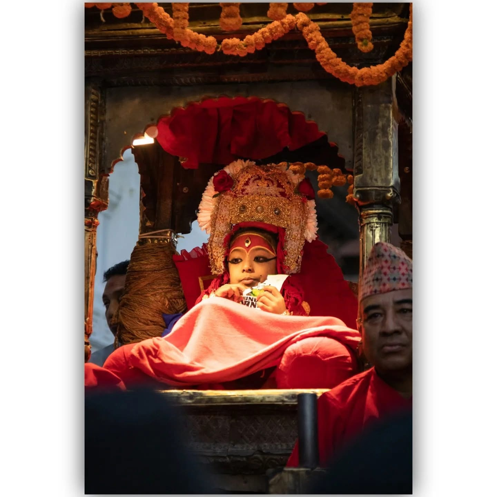
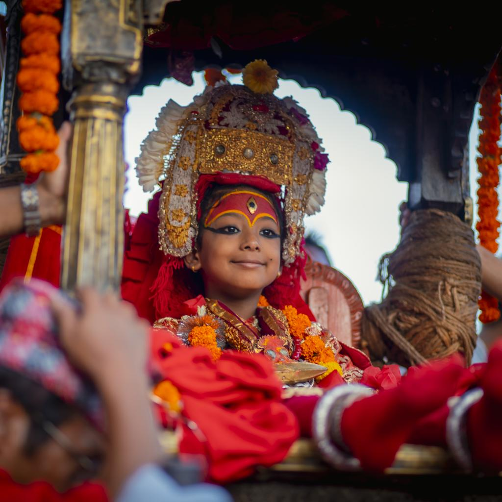
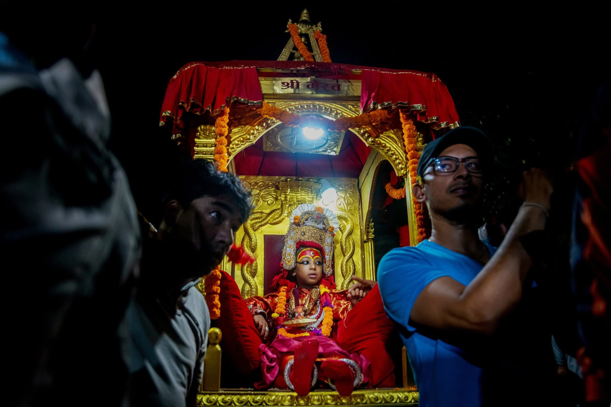
Of the three chariots that move through Kathmandu's old city during Indra Jatra, Shree Bhairav's carries the most fearsome presence. As with Ganesh, a chosen boy represents the deity in the chariot, but the symbolism he carries is entirely different: the fearsome mask of Akash Bhairav is put on display and the chariot of Kumari is pulled around the old city, with Kumari's chariot followed by two more chariots, that of Ganesh and Bhairav. Bhairav is the wrathful aspect of Shiva, and his inclusion in the procession alongside the gentle, obstacle-clearing Ganesh and the divine child-goddess Kumari completes a triad that balances ferocity, auspiciousness, and living divinity.
Beyond the chariot itself, Bhairav's presence saturates the entire festival through a series of enormous masks displayed around the old city. Masks of Bhairava are displayed at various places in Kathmandu throughout the eight days of the festival, the largest being Sweta Bhairava at Durbar Square and Akash Bhairava at Indra Chowk, with a pipe from the mouth of Sweta Bhairava dispensing alcohol and rice beer on different days. Devotees line up for hours to receive this beer, believing it carries the god's blessing. Larger Bhairava masks mounted on carts or platforms have an opening for the mouth, with a tube extending from a cask of beer behind the mask through it, so devotees come to receive beer infused with the power and blessings of Bhairava
Bhairav's role is not merely decorative — it ties directly into the sacrificial and ritual character of the festival. On the final day, Bhairava receives blood offerings from devotees, with the larger masks receiving the blood of goats killed right in front of them, a practice rooted in his identity as a protector deity who demands and rewards devotion in equally intense measure. This is part of why Bhairav's chariot, though smaller than Kumari's, draws crowds who approach it with a mixture of reverence and apprehension distinct from how they greet the other two chariots.
Together with Ganesh and Kumari, Bhairav's chariot procession follows the same three-day route through the city — on Kwaneyā the chariots are pulled through the southern part of town, on Thaneyā through the northern part till Asan, and on Nānichāyā through the central section at Kilāgal. As the wrathful guardian in this moving trio of deities, Shree Bhairav embodies the protective, boundary-marking force of the festival — the counterpart to Ganesh's gentle clearing of obstacles and Kumari's serene divinity, together forming the spiritual architecture that Indra Jatra parades through the heart of old Kathmandu each year.